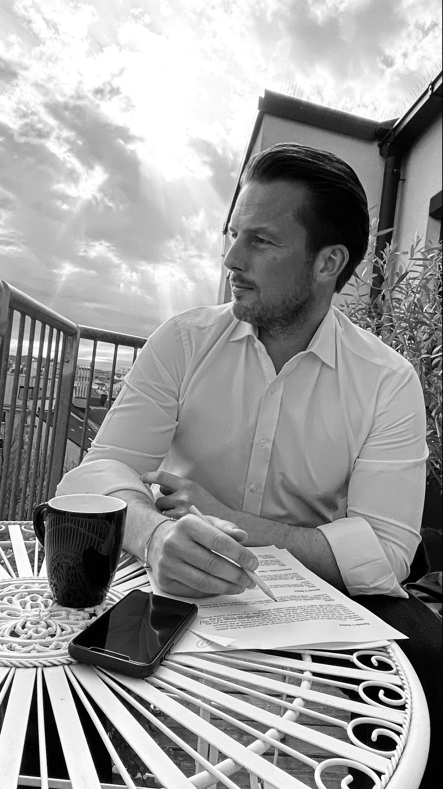

Wolf Valtiner

Wolf Valtiner · Voice Over Artist · Wien
Schnell reinhören
Verliebt in Stimme — von Kindheit an
Als Kind wollte ich auf der Bühne stehen und Menschen berühren. Im Studium habe ich gelernt, wie wichtig Haltung und Sprache im Vergleich zu Inhalt sind. Und in 20 Jahren auf dem internationalen Parkett und bei tausenden Vorträgen habe ich es hautnah erlebt — die Stimme macht's!
Der Inhalt ist wichtig, aber noch mehr kommt es darauf an, wie er erzählt wird. Deshalb habe ich mich auf die Suche nach meinem Zugang gemacht und meine eigene Stimme gefunden.
2020, in einer kurzen Lockdown-Pause, habe ich meine Sprecherausbildung abgeschlossen. Trainiert wurde ich in den zwei Jahren davor von einigen der Besten ihres Fachs.
Seitdem verbringe ich immer mehr Zeit hinter dem Mikrofon und mit unterschiedlichsten Projekten, von Onlinetrainings bis zu Kinderbüchern.
In der Zeit abseits der Sprecherkabine arbeite ich mit meinen Partnern in anderen IT-Konzernen und entwickle mit meinen Teams gemeinsame Projekte und Verkaufsstrategien in Europa und dem Mittleren Osten. Kommunikation auf der persönlichen Ebene.
Darüber hinaus zieht es mich tatsächlich auf die Bühne — zu Vorträgen oder als Moderator.

“Let your mind go and your body will follow!” Harris K. Telemacher (Steve Martin), L.A. Story